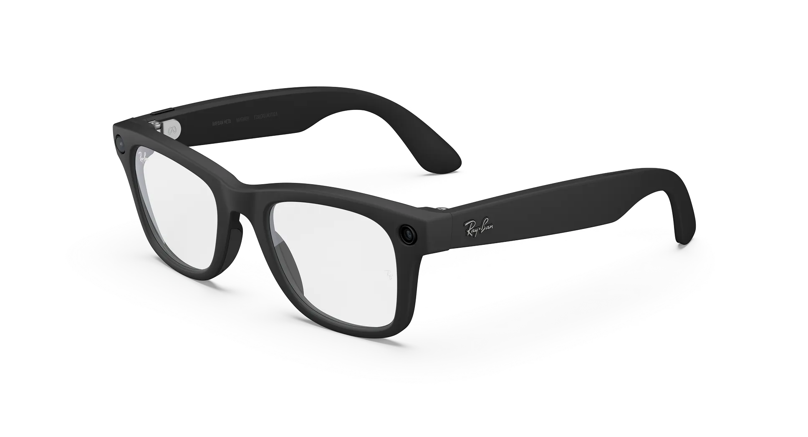
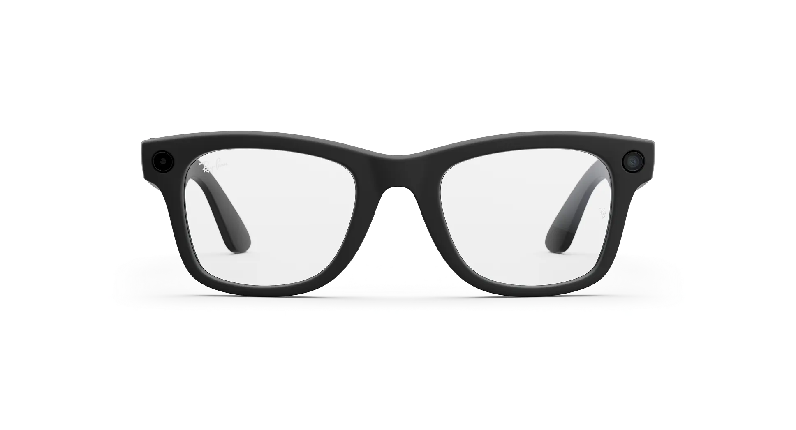
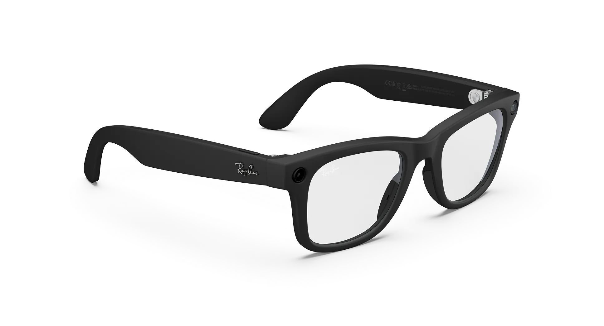
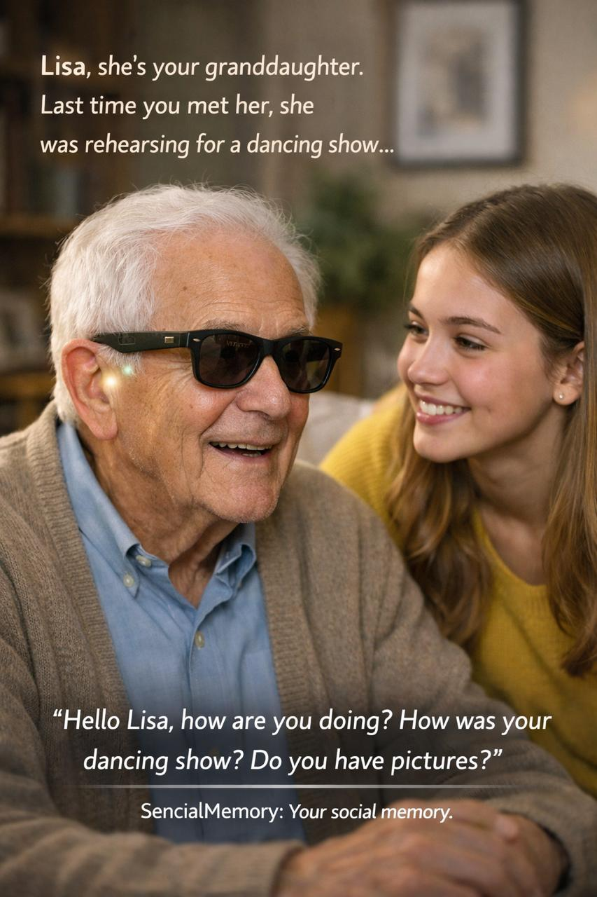
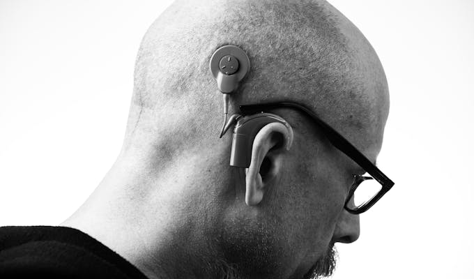
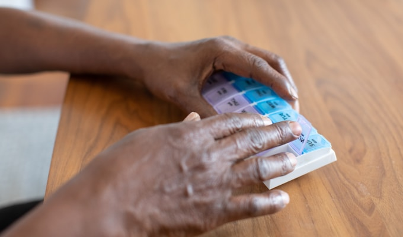

Alzheimer's · Granddaughter
"My grandfather hadn't recognized me for two years. The first time Sencial whispered my name to him, he looked at me and said 'Lisa! How was your dancing show?' I couldn't stop crying."
Sencial Memory combines real-time audio separation with social intelligence to recognize voices and faces, remember names, coach emotional regulation, and restore independence, dignity, and human connection — for people with Alzheimer's, face blindness (prosopagnosia), PTSD, anger management challenges, paranoia, hearing differences, and everyone navigating the complexity of social life.
See It in ActionA person begins speaking. Sencial isolates their voice from ambient noise in under 2 seconds. A private whisper delivers exactly what is needed. Click any card to learn who it helps.
Social recognition loss is one of the earliest symptoms of Alzheimer's, while aphasia impairs language processing and prosopagnosia makes faces unrecognizable. Sencial acts as a gentle, private memory prosthetic.

Face blindness, early dementia, and language processing disorders each attack a different link in the chain of social recognition. Sencial Memory provides a private, always-on memory prosthetic — voice-first identification for prosopagnosia, gentle context for Alzheimer's patients who cannot remember caregivers' names, and real-time transcription for aphasia patients who hear words but struggle to decode them. Not a reminder that something is wrong — quiet support for living with dignity.
For the 1.5 billion people with hearing loss, Sencial's real-time voice separation restores speech intelligibility. For the visually impaired, it identifies who entered the room and describes expressions.

Clinical studies show that AI-enhanced audio separation can restore speech intelligibility to the level of normal hearing. Sencial's real-time source separation means following conversations in noisy clinics and understanding care instructions accurately. For vision loss, voice descriptions identify people, read signs and menus, and describe surroundings — providing what users call "a trusted friend whispering everything I need to know."
PTSD, autism, anger management, paranoia — these conditions share a common challenge: social environments become overwhelming. Sencial provides real-time environmental awareness and emotional coaching.

13 million Americans with PTSD experience hypervigilance that makes public spaces feel dangerous. Autistic individuals face enormous cognitive load in social recognition. Anger management patients can't access therapy techniques during emotional flooding. Paranoid ideation turns ambiguous signals into threats. Sencial provides real-time environmental awareness, identity confirmation, and emotional coaching — creating the pause, clarity, and grounding that therapy alone cannot deliver in the moment.
From Alzheimer's to PTSD, from anger management to paranoia — Sencial Memory gives people back the moments that matter most.



Built for Meta Ray-Ban Smart Glasses and next-generation wearables.
5-microphone array captures all ambient audio in real time
S4D engine isolates individual voices from noise in <10ms
Voice embeddings match against your personal identity graph
Context retrieved: name, relationship, shared history, care notes
Private audio briefing delivered through open-ear speakers
Sencial Memory doesn't just observe — it actively engages users with bite-sized therapeutic exercises delivered in real-world situations, turning everyday moments into opportunities for growth.
Sencial detects real-world situations — a family dinner, a work meeting, a crowded bus — and delivers personalized micro-challenges. "Someone at this table is speaking to you — try to greet them by name before I tell you."
Exercises adapt automatically based on success rate. For Alzheimer's: name recall, then relationship recall, then conversation recall. For anger management: identifying triggers, then pausing, then reframing.
For PTSD and paranoia, Sencial delivers guided exposure exercises in real situations. "There's a conversation behind you. Listen for 5 seconds and identify the topic. You're safe."
Every completed challenge is logged — success rate, emotional state, context, duration. Therapists receive structured weekly reports: which exercises worked, which situations triggered avoidance, and how performance trends.
Clinicians can configure specific micro-challenge programs through the dashboard — adjusting difficulty, frequency, and triggers to match each patient's treatment plan.
Gentle gamification — streaks, milestone celebrations, personal bests — keeps users motivated. "You recognized 3 people at today's gathering before I helped. That's a new record."
Every capability runs simultaneously, in real time, on device.
S4D streaming model separates overlapping voices from ambient noise with sub-10ms latency — in a crowded ward, a busy clinic, or a family dinner.
All inference runs locally on device. No cloud round-trips, no latency spikes, no connectivity dependency.
The camera feed identifies known faces and adds visual context — matching a voice to a face, reading expressions, and describing the scene.
Persistent voice graph recognizes known voices across sessions — caregivers, therapists, family members — building reliable social memory.
NLP monitors clean per-speaker streams for introductions, silently enrolling new people without any user action required.
Per-speaker language detection and real-time transcription in any language — critical for multilingual care settings.
Detects escalation patterns — rising heart rate, voice pitch changes — and delivers private de-escalation cues and grounding exercises.
Accessibility mode with slower, simplified prompts. Companion app for caregivers enables shared oversight for Alzheimer's and dementia patients.
Everything stays on your device. No exceptions.
All voice and face embeddings stored locally, encrypted at rest. Cloud sync is opt-in with end-to-end encryption.
Emotion analysis is strictly opt-in and mutual. Transcription only activates when explicitly triggered by the user.
Full data portability and deletion on request. No third-party data monetization. Accessibility framing provides regulatory latitude.
Sencial Memory restores independence and connection for people with hearing differences, cognitive divergences, and social recognition challenges.